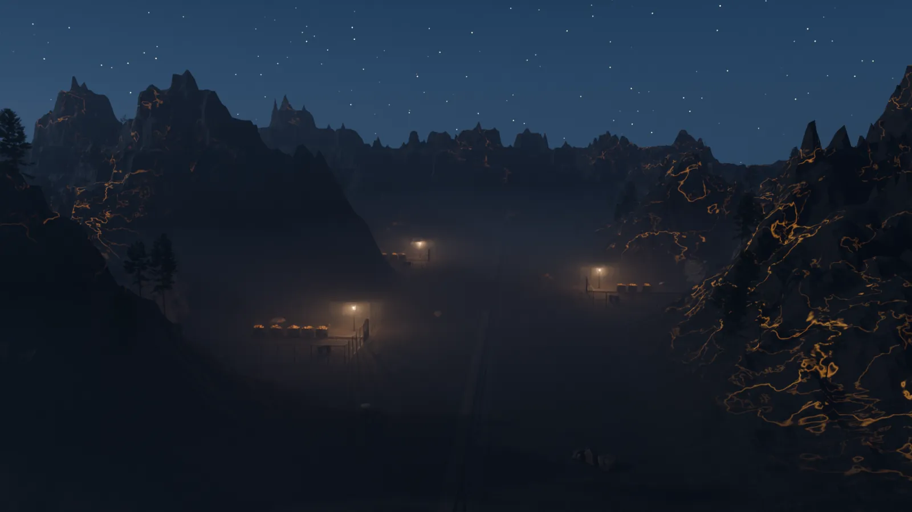

A lot of good AI is free right now. It's spread across different tools and sign-ups, so most of it goes unused. grunt puts it all behind one model your coding agent can use.
On the line today
grunt starts with two free sources turned on, and it costs nothing. The others stay off until you switch them on. We add new ones as we test them.
If a free source has a catch, like keeping your prompts, grunt tells you up front.
Installing grunt costs nothing. It won't buy credits, upgrade a plan or move you to a paid model unless you tell it to.
grunt runs on your own computer. Your prompts go straight to whichever source is doing the work, not through our servers, and your keys stay with you.
When one free source hits its limit halfway through a job, the next one takes over where it left off. Your agent keeps working.
One command
npx usegrunt
This sets up Pi to use grunt. Claude Code and opencode work too, as a custom model. MIT licensed.